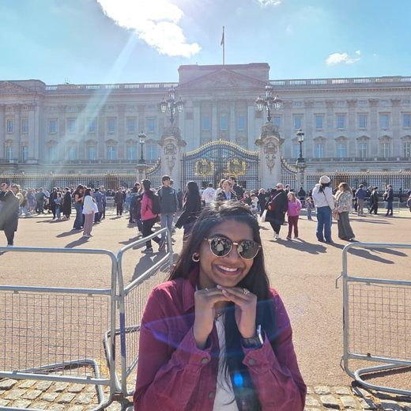
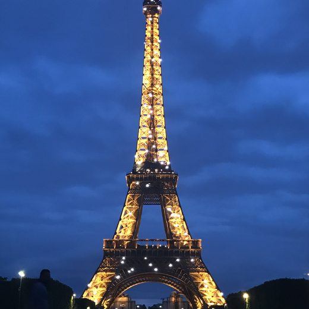
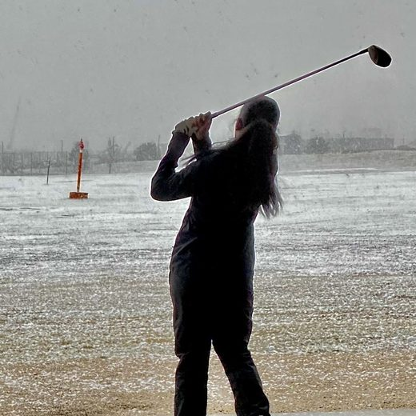
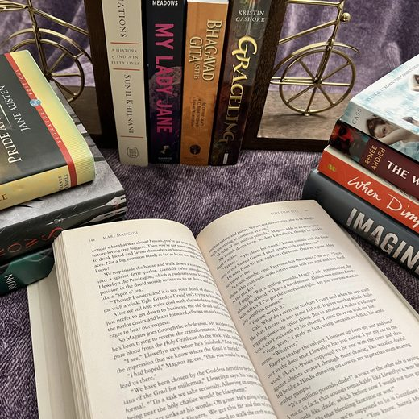
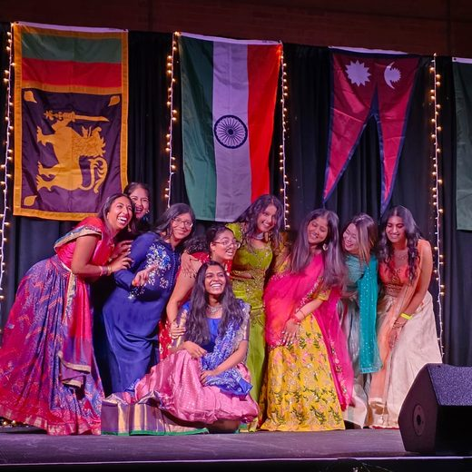
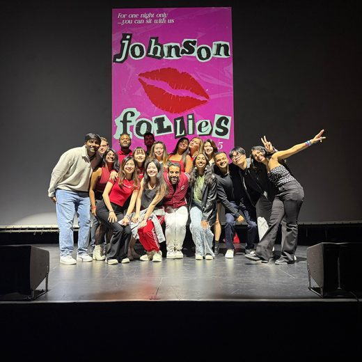

hi! i'm Tanmai.
I built this site partly to have a corner of the internet that's actually mine, partly because a resume can't hold most of what makes a person interesting, and partly to use AI tools, especially Claude, to learn more and build something I would never have been able to build before.
So, here's more about me.
I am a fanatic when it comes to languages and culture. I grew up in a household that spoke 2.5 languages and consumed media in 4. I speak Telugu and English fluently and picked up Hindi through Bollywood movies and my mom. Growing up, we also watched a lot of Tamil movies. In school and college, I learned Turkish, Spanish, and French. As I got older, I wanted to continue to learn more and more languages. Now, on Duolingo, I've finished the Hindi course and am practicing, relearning, and learning French and Spanish. Because of this I even watch movies and TV shows in any language as long as I'm fascinated by the plot and direction, so now I know a handful of Mandarin and Polish words. A fun fact about me: if I could have any superpower in the world, I'd want to be able to converse with anyone in the world in their native tongue. There's something about being able to communicate with someone in a language you're both fluent in. There's magic in that.
I am a golfer and have been playing for over a decade. I had never picked up a club before in my life and had only ever played Wii Golf when I decided to sign up for the golf team in high school. Thankfully, my coach was willing to take me on, because I found a new passion as I was playing in tournaments and playing every day. I now mainly teach myself and play as frequently as I can. There's such freedom and power that I get from being able to put all the world's stress away, play 18 holes, and hit a golf ball as hard as I can with my driver or my 5 iron.
To be honest, it's been a while since I've been able to sit down with a book. But reading a good book was and, truthfully, always will be one of the greatest joys of my life. When I was a child, my mom used to take my brother and me to the library to increase our English vocabulary and grammar. I dived into the deep end as I discovered more and more fantasy books. They were my escape from being lonely in high school and my peace during college when the world was moving too fast. My favorite book of all time is Shatter Me by Tahereh Mafi. I love it because it was one of the first books I read in the YA fantasy genre and it made me feel like I could do anything I put my mind to, whether it was changing schools and not knowing anyone in my classes yet again or defeating an evil ruler of the world.
Music is my whole world. No, literally. Music is always playing around me. I love listening to pop, pop-rock, Bollywood, soundtracks, and, as of very recently, classical music. Even my brain is constantly making music as I do simple tasks. And because of that, I love to sing and dance. Within the past few years, I've rediscovered dancing, especially Bollywood dancing. I'm nowhere near good yet, but I challenge myself weekly to try a new choreography and record it for myself. I have some of my proudest moments on the Dance page.
Professionally, I spent almost 3 years at General Motors as a District Sales Manager, but really as a growth strategist for all my dealerships. Throughout my time there, I had 48 stores under me and it was my job to help each and every one of them solve the problems they were facing and grow in their market. I fell in love with trying to figure out what the true problem was and solving it. It taught me how strategy affects each aspect of the business and how it works top down, which was really important when I moved on to Cornell Johnson for my MBA. Since before business school, I've been helping the DBaasNow team on various functions: experiential marketing, digital marketing, go-to-market strategy, and now growth strategy. That's the work I want to keep doing: sitting with a company's hardest strategy questions and finding the real problem underneath.
One thing you have to know about me, even if you don't take anything else away from my website, is that I love to challenge myself. Growth and change are my constants in life. Whether it is a puzzle or a dance choreography or a new skill like making this website, I am someone who is always looking for ways to grow and become a better version of myself.
If you want to talk about strategy, dance, music, books, golf, languages, or want to get to know me more, I'd love to hear from you. The best way to reach me is by email or on LinkedIn.





